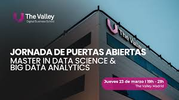

Conoce nuestros másters

Máster en Digital Product Management
Innova, lidera y hackea el crecimiento del producto
El Product Manager es la clave para liderar la estrategia de productos digitales: su concepción, desarrollo y crecimiento trabajando
con su equipo de desarrolladores, UX y Data para tomar las mejores decisiones de producto.
A través de esta experiencia formativa única articulada en torno a proyectos y retos prácticos aprenderás a aplicar las metodologías y herramientas usadas por las startups tecnológicas líderes para transformarte en un auténtico líder de productos digitales.
Posiciones profesionales relacionadas Product Manager, Product Designer, Consultor de negocio.

Desarrollo Web: Front End
Innova, lidera y hackea el crecimiento de productos digitales
100% enfocado a la empleabilidad: 6 semanas dedicadas a practicar intensamente desarrollando 3 proyectos, con un proyecto final real sponsorizado por una empresa, y co-creado con empresas tecnológicas.
Posiciones profesionales relacionadas: Desarrollador web, Desarrollador Front-end, Desarrollador de React

Impact MBA
Fórmate para ser parte activa del cambio de eras
Conviértete en un profesional flexible, capacitado para adaptarse al cambio gracias al desarrollo de conocimientos, competencias y herramientas que las empresas reclaman. Con foco en las posibilidades que las tecnologías disruptivas ofrecen y su aplicación en el mundo
de los negocios, buscando siempre el impacto positivo en la sociedad. Desarrollarás una orientación humanista y ética, dirigida a una realidad cada vez más tecnologizada para ser capaz de emprender un proyecto desde el día inicio y hacerlo realidad..
Posiciones profesionales relacionadas Jefe de proyecto, PMO...